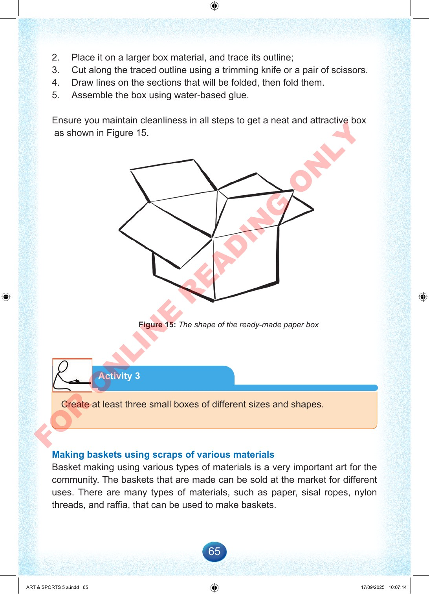

65
2.
Place
it
on
a
larger
box
material,
and
trace
its
outline;
3.
Cut
along
the
traced
outline
using
a
trimming
knife
or
a
pair
of
scissors.
4.
Draw
lines
on
the
sections
that
will
be
folded,
then
fold
them.
5.
Assemble
the
box
using
water-based
glue.
Ensure
you
maintain
cleanliness
in
all
steps
to
get
a
neat
and
attractive
box
as
shown
in
Figure
15.
Figure
15:
The
shape
of
the
ready-made
paper
box
Activity
3
Create
at
least
three
small
boxes
of
different
sizes
and
shapes.
Making
baskets
using
scraps
of
various
materials
Basket
making
using
various
types
of
materials
is
a
very
important
art
for
the
community.
The
baskets
that
are
made
can
be
sold
at
the
market
for
different
uses.
There
are
many
types
of
materials,
such
as
paper,
sisal
ropes,
nylon
threads,
and
raffia,
that
can
be
used
to
make
baskets.
ART
&
SPORTS
5
a.indd
65
ART
&
SPORTS
5
a.indd
65
17/09/2025
10:07:14
17/09/2025
10:07:14
F
O
R
O
N
L
I
N
E
R
E
A
D
I
N
G
O
N
L
Y